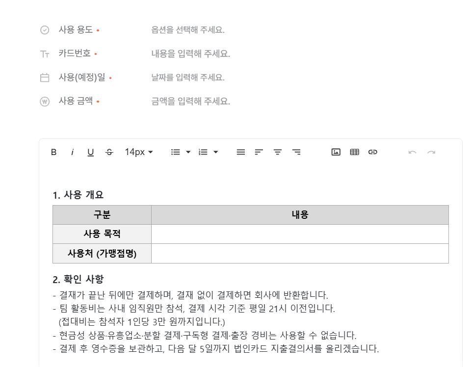
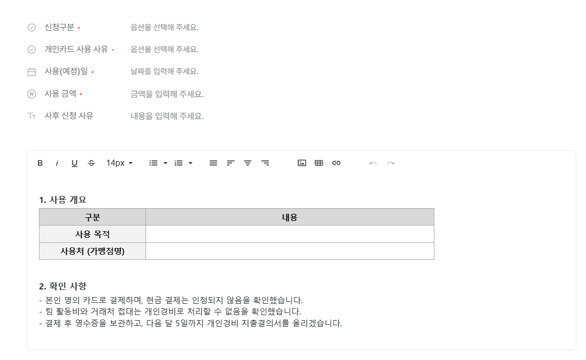
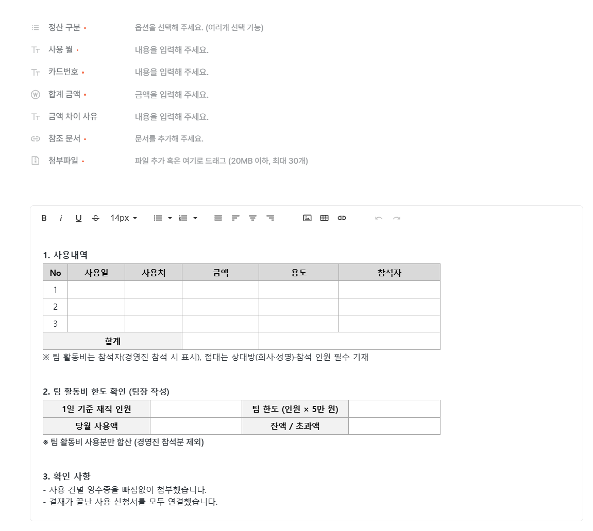
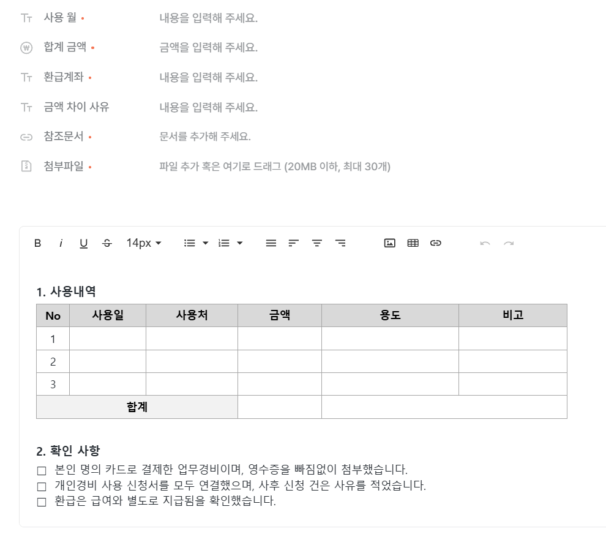

법인카드는 Flex 신청서 결재가 끝난 뒤에만 씁니다. 한 달 사용분은 다음 달 5일까지 정산합니다. 팀 카드를 쓸 수 없을 때만 본인 카드로 결제하고 개인경비로 정산합니다.
누르면 해당 절차로 이동합니다.
12월 사용분 예시. 5일이 주말·공휴일이면 다음 영업일까지 올립니다.
마감이 지나면 개별로 리마인드 안내를 드립니다.
팀 공용카드는 두 가지 용도로 씁니다. 순서는 같고, 결재가 끝나야 결제할 수 있습니다.

팀 카드를 다른 팀원이 쓰고 있거나 결재를 기다릴 수 없을 때, 업무경비만 본인 카드로 결제합니다.

팀 활동비와 접대는 반드시 결재를 받은 뒤 법인카드로 결제합니다.
1일~말일 사용분을 다음 달 5일까지 Flex에 올립니다. 휴일이면 다음 영업일까지.


팀원이 결제한 팀 활동비는 팀장 정산에만 올리고, 팀원 본인의 업무경비 정산에는 넣지 않습니다.
반환이 필요하면 경영팀이 정산 내용을 확인한 뒤 대상자에게 요청합니다.
| 상황 | 처리 | 기한 |
|---|---|---|
| 결재 없이 법인카드로 결제 (업무경비) | 회사 계좌로 반환한 뒤 개인경비로 다시 신청 | 경영팀 요청 후 10영업일 이내 |
| 결재 없이 법인카드로 결제 (팀 활동비·접대) | 회사 계좌로 반환. 다시 신청할 수 없습니다 | 경영팀 요청 후 10영업일 이내 |
| 팀 활동비 한도 초과 (1인 월 5만 원) | 초과분을 회사 계좌로 반환 | 정산 종결 후 10영업일 이내 |
| 접대비 한도 초과 (참석자 1인 3만 원) | 초과분을 회사 계좌로 반환 | 정산 종결 후 10영업일 이내 |
| 외부인이 참석한 팀 활동, 쓸 수 없는 비용 | 해당 금액을 회사 계좌로 반환 | 정산 종결 후 10영업일 이내 |
결재 없이 결제하면 반환하고 다시 신청하는 번거로움이 생기고, 팀 활동비와 접대는 지원을 받을 수 없습니다. 꼭 결재를 받은 뒤 결제해 주세요. 반환금은 급여에서 공제하지 않습니다.
| 구분 | 팀 활동비 | 업무경비 |
|---|---|---|
| 용도 | 팀 회식, 팀원 간 커피챗, 팀 회의 중 식음료 | 거래처 접대, 택시·외근, 시장조사, 촬영·발송, 야근 식사·택시 등 업무에 필요한 경비 |
| 한도 | 팀장 포함 1인당 월 5만 원 매월 1일 재직 인원 기준, 이월 불가 | 거래처 접대: 참석자 1인당 3만 원 그 밖의 경비: 별도 한도 없음 (야근은 야근 지원 기준) |
| 참석 | 사내 임직원만 (외부인 참석 시 불인정) | — |
| 유의 사항 | 평일 21시 이전 결제분만 인정 주말·공휴일 결제 불인정 | 거래처 접대는 상대방·목적·참석 인원을 적습니다 |
| 월말 정산 | 팀장이 팀원 사용분까지 모아 올림 (팀장 본인 업무경비와 1건으로 함께 가능) | 사용한 본인이 올림 |
표에 없는 비용은 쓰기 전에 인사팀에 문의해 주세요.
| 분류 | 예시 | 신청서에 적을 것 |
|---|---|---|
| 거래처 접대 | 바이어·유통사·인플루언서 미팅 식사 (참석자 1인당 3만 원) | 상대방(회사·성명), 목적, 참석 인원 |
| 택시·외근 | 택시, 대중교통, 주차비, 통행료 | 외근 장소·목적 |
| 시장조사 | 경쟁사 제품, 매장 벤치마킹 구매 | 구매 목적, 사용처 (분석·샘플 등) |
| 촬영·콘텐츠 | 촬영 소품, 스튜디오 대관, 소품 렌탈 | 촬영명. 금액이 크면 견적서 첨부 |
| 발송 | 우편, 퀵, 택배, 국제특송, 시딩·샘플 발송 | 발송 대상·수량 |
| 행사 운영 | 팝업·행사 현장 소모품, 다과, 부스 비품 | 행사명 |
| 사무·총무 | 사무용품, 소모품, 도서, 출력·제본 | — |
| 교육·세미나 | 외부 교육·박람회 참가비 | 교육·행사명, 참가자 |
| 야근 | 식사, 택시 | 야근 사유 (택시는 리더 또는 COO 사전 승인) |
근무시간 외 식대·교통비는 아래 기준에 맞는 경우에만 지원합니다.
| 항목 | 지원 대상 | 기준 |
|---|---|---|
| 석식 | 20:30 이후까지 근무하는 경우 | 1인 13,000원 한도 법인카드 결제 원칙 (팀 카드를 쓸 수 없으면 개인경비) 여러 명이 함께 주문할 때는 배달비 절감을 위해 한 식당에서 주문 일찍 출근했더라도 18~19시 석식은 지원하지 않습니다 |
| 택시비 | 22:30 이후까지 근무하는 경우 | 리더 또는 COO 사전 승인 필수 가급적 22:30 이전 퇴근 권장 |
공용카드와 개인경비 모두 쓸 수 없습니다.
| 구분 | 예시 | 이유 |
|---|---|---|
| 개인 용도 | 개인 물품, 개인 식사 | 회사 비용이 아님 |
| 현금성 상품 | 상품권, 기프티콘 | 사용처를 확인할 수 없음 |
| 유흥업소 | 주점, 유흥주점 | 비용 인정 불가 |
| 분할 결제 | 한도를 넘기려고 나눠 결제 | 한도 회피 |
| 구독형 정기결제 | 소프트웨어·서비스 월 구독, 자동결제 | 카드 자동결제 차단. 필요하면 경영팀에 별도 요청 |
| 출장 경비 | 출장 교통·숙박·일비 | 출장 여비 기준 마련 전까지 별도 처리 |
| 개인에게 주는 용역비 | 모델, 메이크업 아티스트, 개인 인플루언서 | 원천징수 대상이라 카드 결제 불가 |
| 사업자 거래처 대금 | 발주, 대행사, 물류 정산 | 세금계산서를 받아 계좌이체로 처리 |
신한 체크카드 9장. 11월 30일까지 지급, 12월 1일부터 사용
| 카드번호 (끝 4자리) | 주관부서 | 같이 쓰는 부서 |
|---|---|---|
| **** 6525 | MD팀 | — |
| **** 4871 | BM팀 | — |
| **** 6639 | 마케팅팀 | — |
| **** 4153 | 마케팅팀 | — |
| **** 3493 | 해외영업팀 | 글로벌팀 · 아마존팀 |
| **** 3489 | 크리에이티브팀 | — |
| **** 4545 | 인사팀 | — |
| **** 9090 | 전략구매팀 | — |
| **** 6611 | COO | — |
주관부서 팀장이 카드 관리책임자입니다. 같이 쓰는 부서는 카드를 빌려 쓰고, 신청서와 정산은 본인이 올립니다. 카드를 잃어버리면 팀장과 경영팀에 즉시 알려 주세요.
Flex에 올릴 때 결재선을 직접 지정합니다. 신청서와 정산 모두 아래 순서대로 지정해 주세요.
| 올리는 사람 | 결재 순서 | 참조 |
|---|---|---|
| 팀원 | 본인 → 팀장 → 경영팀 → COO | 신청서만 대표이사 |
| 팀장, 팀장이 없는 팀 (글로벌·아마존) | 본인 → 경영팀 → COO | 신청서만 대표이사 |
지출결의서에는 대표이사 참조를 넣지 않습니다. 결재선을 잘못 지정하면 다시 올려야 할 수 있습니다.
네. 팀 회식이나 커피챗도 미리 법인카드 사용 신청서를 올리고, 결재가 끝난 뒤에 결제해 주세요.
회사 계좌로 반환해야 합니다. 업무경비라면 개인경비로 다시 신청할 수 있지만, 팀 활동비와 접대는 지원받을 수 없습니다.
업무경비라면 본인 카드로 결제하고 개인경비로 처리합니다. 개인경비 사용 신청서를 먼저 올려 주세요.
네. 팀마다 각자 사전 신청하고, 각 팀 인원분을 팀별 카드로 결제합니다.
아니요. 법인카드 지출결의서에서 정산 구분을 둘 다 고르고 한 건으로 올리면 됩니다. 한도 확인에는 팀 활동비만 합산합니다.
정산이 끝난 뒤 경영팀이 확인해 요청드리면 10영업일 이내에 초과분을 회사 계좌로 반환합니다.
넘어가지 않습니다. 당월 미사용분은 소멸됩니다.
석식은 20:30 이후까지 근무하는 경우 1인 13,000원 한도, 택시는 22:30 이후까지 근무하는 경우 리더 또는 COO 사전 승인 후 지원합니다.
2027년 1월 5일(화)까지 지출결의서를 올려 주세요.
Flex와 공지에 나오는 말입니다.
| 용어 | 뜻 |
|---|---|
| 상신 | Flex에 문서를 올려 결재를 요청하는 것 |
| 사용 신청서 | 쓰기 전에 승인받는 문서 (법인카드 사용 신청서, 개인경비 사용 신청서) |
| 지출결의서 | 한 달 사용분을 정산하는 문서 (월말 정산) |
| 사후 신청 | 먼저 결제한 뒤 2영업일 이내에 신청하는 것. 개인경비의 업무경비만 가능 |
| 참조 문서 | 지출결의서에 연결하는 결재된 사용 신청서 |
| 정산 구분 | 지출결의서에서 고르는 용도 (팀 활동비 / 업무경비) |